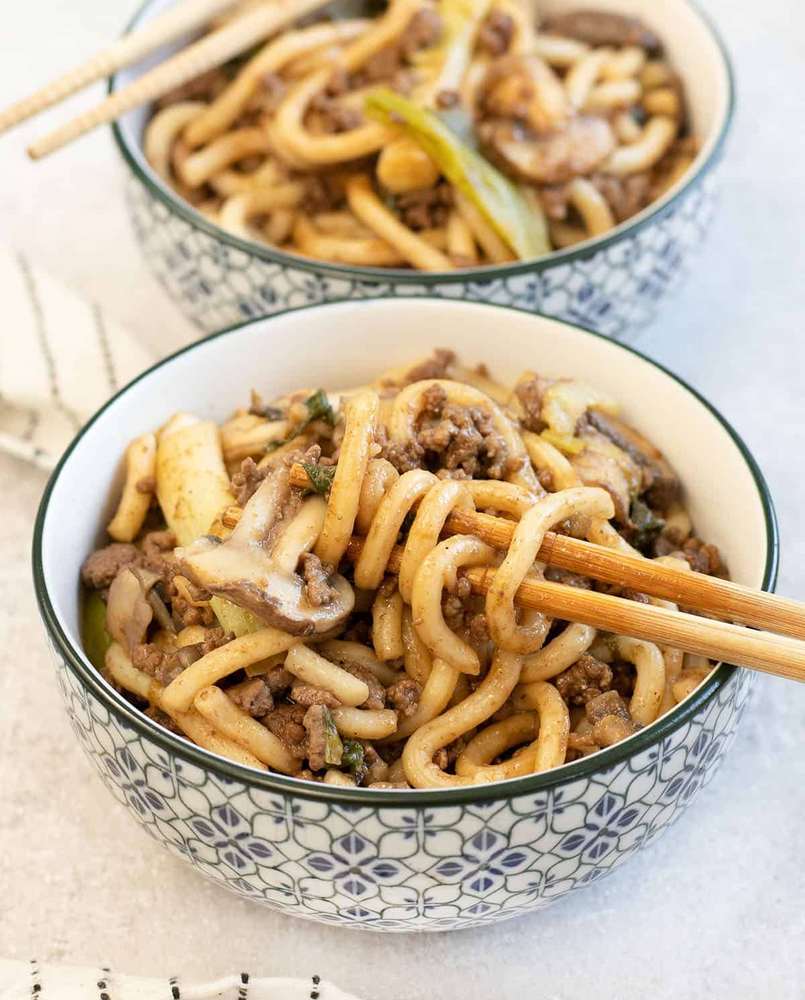

Yaki Udon Recipe

Yaki Udon (焼きうどん) is Japanese stir-fried udon noodles!
What is Yaki Udon?
Yaki Udon (焼きうどん) is Japanese stir-fried udon noodles with vegetables and a protein like meat, seafood or tofu, all tossed with a flavourful savory sauce. It’s akin to Yakisoba, which is another popular Japanese stir-fried noodle dish, but with subtle differences.
Ingredients
Mentsuyu or other soup base
Instructions
Heat 1 tbsp of vegetable oil in wok
Add onions and fry for 1 minute
Add your choice of protein
Add shiitake mushrooms and cook for 30 seconds
Add vegetables and scallions and cook until softened
Add the udon noodles, mentsuyu (soup base) and mirin and cook for another 30 seconds
Serve and Enjoy!